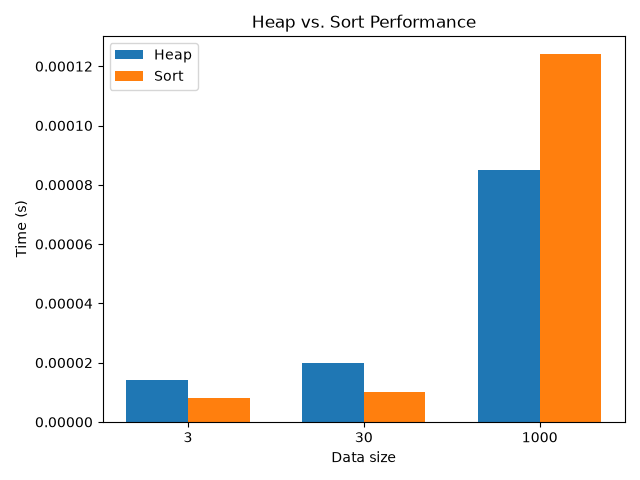
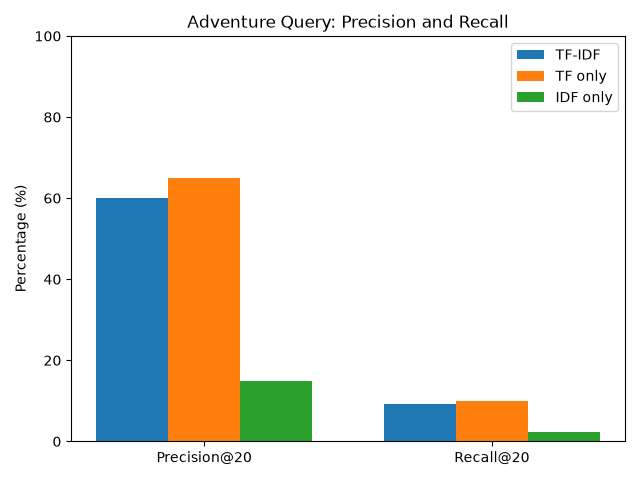
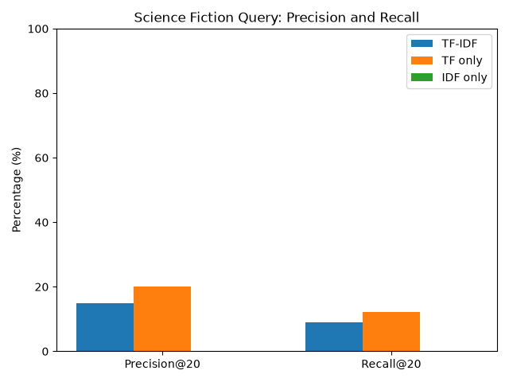
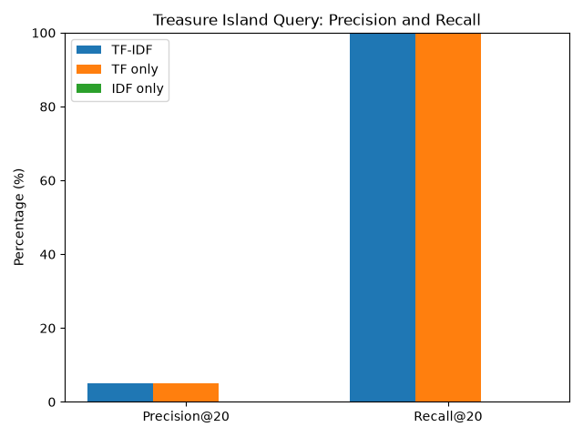

What is Nebula?
Nebula is a text search engine, written from the ground up in Python with no external search libraries. Given a corpus of books pulled from Project Gutenberg, it builds an inverted index and a trie, then answers free-text queries by ranking documents with TF‑IDF and returning the top-k matches — each with a keyword-centered snippet pulled straight from the source text.
It started as a course project built around a specific set of data structures, and grew into a small case study on how those textbook structures behave once real (messy, unicode-laden, inconsistently-punctuated) text gets thrown at them.
Pipeline
The pipeline runs in two stages: building the inverted index and processing queries:
The inverted index
Instead of storing document → words, Nebula stores word → documents that contain
it, which is what makes "find every book containing python" fast instead of a
linear scan of the whole library. Concretely, it's a dictionary of dictionaries:
The inner key is a (document, position) tuple — tuples are hashable, so they work
as dictionary keys, and bundling doc + position into one key means a single lookup gives both
"which book" and "where in the book" at once. The outer defaultdict is built with
a lambda so a brand-new word can be inserted with index[word][(doc, pos)] += 1 and
never needs an explicit initialization branch.
Query syntax
A query is just words, but two trailing characters change how a word is treated — a small parser
(ParseQuery) splits every term into either a filter word, an
expansion word, or a plain query/snippet word:
word!— a filter term: it narrows which documents match, but is excluded from the returned snippet windows.word$— an expansion term: the trie is walked to find every indexed word sharing that stem/prefix, and all of them are folded into the query.- everything else counts toward both scoring and snippet placement.
TF‑IDF ranking
TF is the local signal — how much this particular document is "about" the
term. IDF is the global signal — how rare, and therefore how discriminating,
the term is across the whole corpus. A document's score for a query is the sum of
TF × IDF across every query term.
Two constants get pre-computed up front — total document count for IDF, and each document's total word count for TF — so that scoring a query only has to compute the parts that actually depend on the query itself. If a term's TF is zero for a document, its IDF is never even calculated.
Heap-ranked top-k
Once every candidate document has a score, only the top k are needed — so rather
than sorting the entire result set, Nebula keeps a size-k min-heap and pushes
candidates through it, discarding the lowest score whenever the heap overflows. In theory that's
an O(n log k) win over an O(n log n) full sort whenever
k ≪ n. Benchmarking it against Python's built-in sort confirmed the crossover:

At tiny input sizes the constant overhead of maintaining a heap actually loses to a plain sort —
it only pays off once n is large enough for the asymptotic gap to matter, which
shows up cleanly between the 30-document and 1000-document runs above.
A tokenization bug worth telling
Early on, a query for treasure and Jim against Treasure Island returned
a single hit — but grep found the word "treasure" five separate times in the same
file. The index was under-counting because words were being stored with their surrounding
punctuation still attached ("treasure," and "treasure" hashed to two
different keys) and with inconsistent casing.
That one-liner alone dropped the index from 24,036 entries to 15,733 — and brought the
"treasure" query results in line with grep. A second pass turned up leftover curly quotes
(“ ” ‘ ’) that string.punctuation
doesn't know about, since they're Unicode, not ASCII:
The fix also surfaced a performance lesson: Python re-evaluates an expression like that on every loop iteration, so the punctuation set needs to be built once outside the tokenizing loop, not redefined on every word.
Precision & recall
To check whether TF‑IDF was actually earning its keep, each query was also run with TF only and IDF only as ablations, and precision/recall@20 was measured against a hand-labeled set of relevant documents for three different queries.



IDF alone consistently underperforms — on the sci-fi query it returns zero relevant documents in the top 20. That makes sense: IDF only measures how rare a term is corpus-wide, with no regard for whether the term actually shows up often in a given document, so it happily ranks documents that mention a rare word exactly once above documents that are genuinely about the topic. TF‑IDF and TF-only land close together across all three queries, which suggests that for this corpus and these queries, term frequency is doing most of the ranking work, with IDF mainly acting as a tie-breaker.
What's next
- Persist the built index to disk — right now it's rebuilt from scratch on every run, which is the main bottleneck at larger corpus sizes (~5–30 minutes to index 1000 books).
- Scale from ~1000 books toward the full ~80,000-book Gutenberg catalog, which will need the index-persistence work above to be usable.